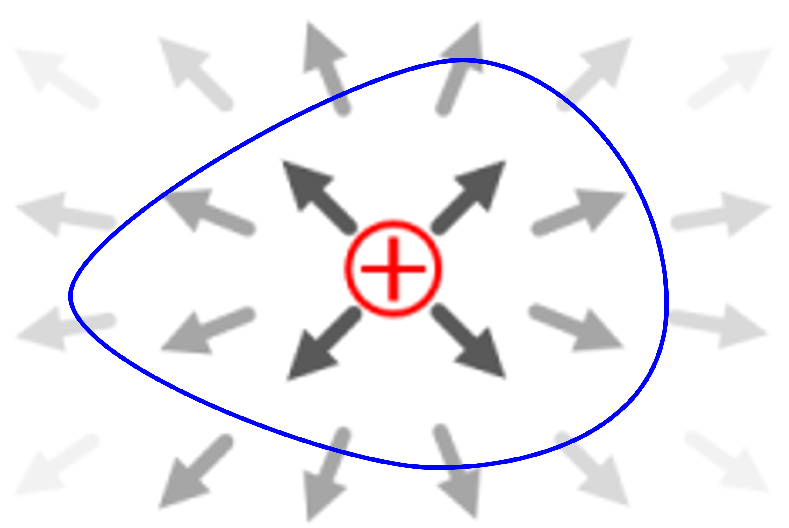

(b) Divergence
1. Divergence
- 어떤 위치에서, 벡터장의 발산 변화를 만드는 근원을 구하고자 할 때, 쓰는 연산자(도구).
- 근원의 크기에 비례하여, 벡터장의 값이 변화한다.
(1) 첫번째 Maxwell equation
$$ \nabla\cdot\vec{D}=\rho_v $$위 식이 의미하는 바는, 전속밀도의 발산 변화를 만드는 근원을 구하기 위해, 어느 위치에서 divergence (연산자)도구 를 사용하였다. 연산 결과, 체적전하밀도가 전속밀도를 변화시킴을 알았다.
(2) 두번째 Maxwell equation
$$ \nabla\cdot\vec{B}=0 $$위 식이 의미하는 바는, 자기장의 발산 변화를 만드는 근원을 구하기 위해, 어느 위치에서 divergence (연산자)도구 를 사용하였다. 연산 결과, 아무것도가 자기장의 발산 변화을 일이키는 것이 없음을 알았다. 또는 단극이 존재하지 않음(항상 같은 양의 쌍극으로 존재)을 의미한다.
2. Divergence 중요 연산자 특성
$$ d^3V\nabla:=d^2\vec{s} $$proof)
$$ \int_{\triangle V}d^3V\nabla\cdot\vec{A} =\int_{\triangle s}d^2\vec{s}\cdot\vec{A} $$여기에서 공통된 부분을 제거하면, 위에서 제시한 유용한 관계식을 얻을 수 있다. (수학적으로 엄밀한 연산자 정의라기보다는, Divergence 정리를 간략하게 표현하는 매우 유용한 방법이다.)
3. Divergence 연산의 해석 영역
 $$ \int_{V'}d^3V\nabla\cdot\vec{D} =\int_{V'}d^3V\left[\rho_v\right] =Q $$첫번째 항을 살펴보면,
$$ \int_{V'}d^3V\nabla\cdot\vec{D} =\int_{\text{흰색}}d^3V\nabla\cdot\vec{D}+\int_{\text{전하영역}}d^3V\nabla\cdot\vec{D} =0+\int_{\text{전하영역}}d^3V\left[\rho_v\right] =Q $$발산 정리를 적용하자.
$$ \int_{V'}d^3\vec{V}\nabla\cdot\vec{D} =\oint_{s'}d^2\vec{s}\cdot\vec{D} =Q $$위를 비교해 보면, 원천(근원)을 동일하게 포함한 상태에서, 해석 영역 (폐)면를 어떻게 잡던간에 적분결과는 동일하다.
4. Divergence for an orthogonal coordinate
매개변수 공간 → 실공간 직교좌표계
$$ \nabla_u\cdot\vec{A} =\frac{\partial}{\partial u_i}A_i\implies \nabla\cdot\vec{A} =\frac{1}{h_1h_2h_3}\frac{\partial}{\partial u_i}\left(A_i\prod_{j\ne i}h_j\right) $$proof)
$$ \int_{\triangle V}d^3V\nabla\cdot\vec{A} =\int_{\triangle s}d^2\vec{s}\cdot\vec{A} $$여기에서, △s 는 △V 의 미소 면적 이다. 부피 ΔV가 매우 작다고 가정하면, ΔV 내에서 divergence 는 거의 일정한 값을 가진다고 근사할 수 있다.
$$ \left(\nabla\cdot\vec{A}\right)\int_{\triangle V}d^3V =\int_{\triangle s}d^2\vec{s}\cdot\vec{A} $$$$ \left(\nabla\cdot\vec{A}\right)\triangle V =\int_{\triangle s}d^2\vec{s}\cdot\vec{A}\implies \nabla\cdot\vec{A} =\lim_{\triangle V\to0}\frac{1}{\triangle V}\int_{\triangle s}d^2\vec{s}\cdot\vec{A} $$아래식은 미소 표면을 지나가는 알짜(net) flux의 양을 의미한다.
$$ \lim_{\triangle s\to0}\int_{\triangle s}d^2\vec{s}\cdot\vec{A} =\left(\frac{\partial A_1}{\partial u_1}du_1\right)h_2h_3du_2du_3+\left(\frac{\partial A_2}{\partial u_2}du_2\right)h_1h_3du_1du_3+\left(\frac{\partial A_3}{\partial u_3}du_3\right)h_1h_2du_1du_2 $$$$ \lim_{\triangle V\to0}\frac{1}{\triangle V}=\frac{1}{h_1h_2h_3du_1du_2du_3} $$따라서,
$$ \nabla\cdot\vec{A}=\frac{1}{h_1h_2h_3}\left\lbrace\frac{\partial}{\partial u_1}\left(A_1h_2h_3\right)+\frac{\partial}{\partial u_2}\left(A_2h_1h_3\right)+\frac{\partial}{\partial u_3}\left(A_3h_1h_2\right)\right\rbrace $$